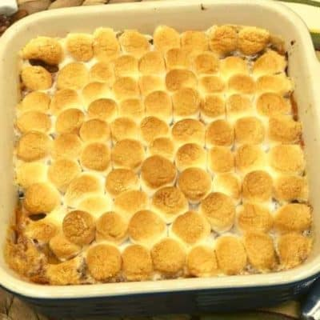

Sweet Potato Casserole Recipe

Description
This recipe is a recipe that I found on online. It was made by the Food Network.
Ingredents
Filling
- 1/2 stick unsalted butter
- 3 to 4 large sweet potatoes, peeled and cubed
- 1/2 cup milk
- 1/4 cup brown sugar, packed
- 1 tsp pure vanilla extract
- 1/2 tsp kosher salt
- 2 large eggs
Topping
- 1/2 cup all-purpose flour
- 1/2 cup brown sugar, packed
- 1/2 stick unsalted butter, melted
- 1/4 teaspoon kosher salt
- 3/4 cup chopped pecans
Steps
- For the sweet potatoes: Add 1 3/4 pounds peeled and cubed sweet potatoes to a large pot of salted water. Bring to a boil over high heat, then lower the heat to a simmer and cook until the potatoes are very tender, 15 to 20 minutes. Drain and cool. Mash the sweet potatoes.
- For the filling: Preheat the oven to 350 degrees F. Butter a 2-quart baking dish.
- Whisk together the butter, mashed sweet potatoes, milk, brown sugar, vanilla, salt and eggs in a large bowl. Transfer to the prepared baking dish.
- For the topping: Combine the flour, brown sugar, butter and salt in a medium bowl until moist and the mixture clumps together. Stir in the pecans. Sprinkle the mixture over the top of the sweet potatoes in an even layer. Bake until mostly set in the center and golden on top, 25 to 30 minutes. Serve hot.